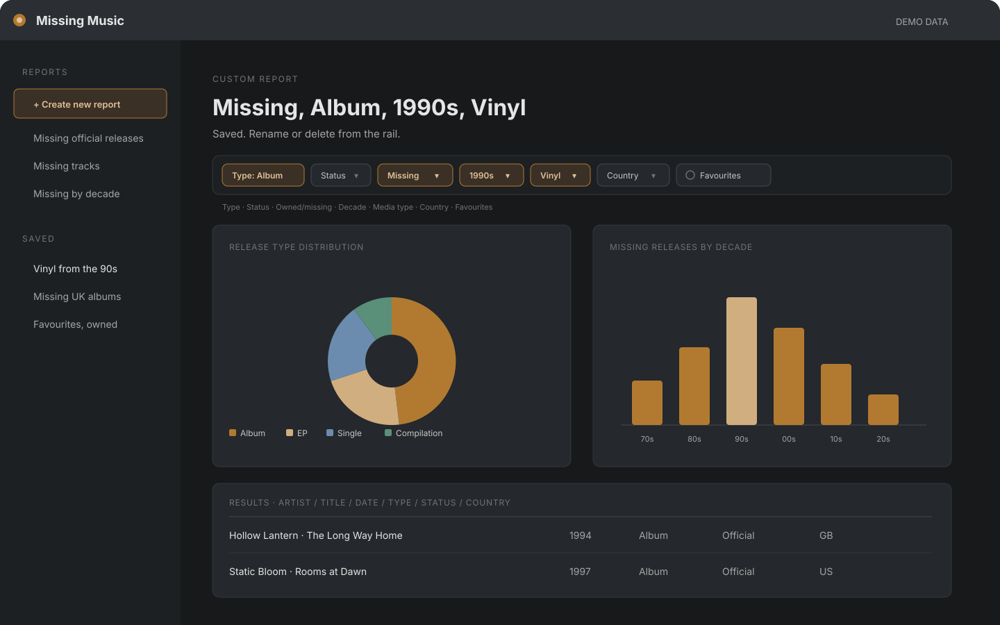
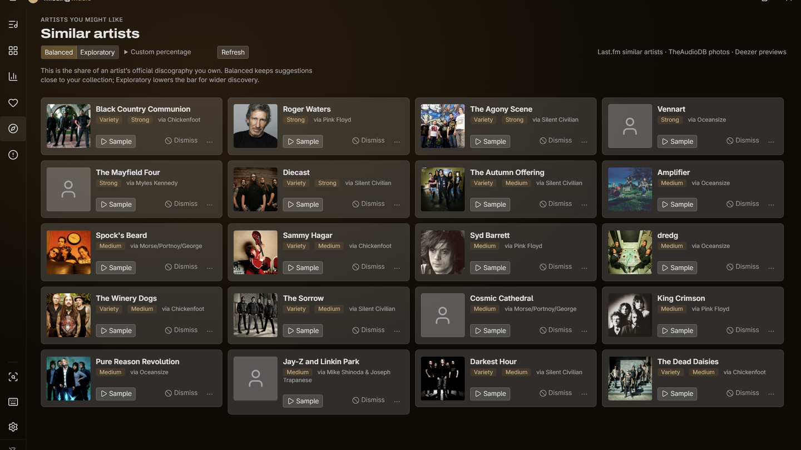
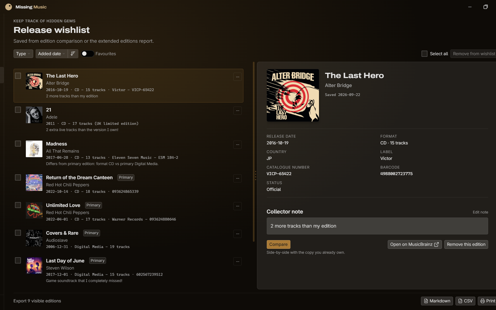

From your folders to your reports. Tag if you want, see the gaps, then decide.
1
Point at your folders
Choose your music folders. Missing Music reads them; your files stay untouched.
2
Match the MusicBrainz catalog
Matching fills in albums, EPs, singles, live sets, compilations, and releases that are still upcoming. Priority updates re-check a match on demand when MusicBrainz changes.
3
See gaps, editions, and Wishlist
Owned and missing releases share one discography view, with dashboard filters so you can narrow what matters. Optional first tagging pass: MusicBrainz Picard. Missing Music does not retag and never downloads audio.
Custom reports and Missing reports.
Build the view you need, then export it. Missing reports call out incomplete copies and editions with extra tracks.
Built-in reports and export are on every tier. Advanced reports (missing tracks and editions with extra tracks) and the custom report builder are Pro and Family.
Custom reports. Filter the library, save the view, and return to it.
Missing tracks from owned releases. Albums that look owned but are short a track.
Editions with extra tracks. Deluxe, remaster, or expanded editions you do not have.
Upcoming releases. A built-in report lists the releases MusicBrainz has scheduled for your artists, on every tier.
Export. Read a report on screen, export it as Markdown or CSV, or print it.

Custom reports. Filters saved as a report.Missing tracks. Owned albums short a track.Editions with extra tracks. An owned edition beside a longer catalog edition.
Compare editions track by track.
Every version you own, and the longer one you don’t. A pressing, remaster, or reissue can be materially different, so compare before you decide. Edition comparison is Pro and Family.
In the app, filter the discography by release type when the list gets long.

Similar artists, with optional samples.
Pro and Family suggest similar artists and albums from your library. A sample plays only after a click.
Save the releases you mean to find.
Save a missing release, with your note, and open it later. The app does not download it. Wishlist is Pro and Family.

Themes, text size, and readability.
Light and dark modes, plus an accent colour. The window and its panels resize. Visible keyboard focus, reduced motion, high-contrast support, and matching status you can read without relying on colour. This is not a WCAG conformance claim.
Trust and installer notes.
What you can verify before you run the installer.
Privacy by default
Your files stay local. No account, ads, or analytics. Audio never leaves your computer. Missing Music looks nothing up online until you turn on Network features, and sample previews stay off until you turn them on. At launch it checks GitHub for a newer version, which you can turn off in Settings. Read the privacy page.
Installer and app limits
Official installers are only on GitHub Releases, with a SHA-256 file. The app also uses a narrow file scope, CSP, provider allowlists, paced calls, and local crash data.
Installing an unsigned build
Download installers only from the official GitHub Releases page, with a SHA256SUMS file. Early builds are not yet code-signed. Check the hash before you run them.
Download only from the official Releases page.
Verify the hash before running: Get-FileHash -Algorithm SHA256 ".\Missing Music_x.y.z_x64-setup.exe". Compare it with SHA256SUMS.
If Windows SmartScreen appears: confirm the hash, then More info, then Run anyway.